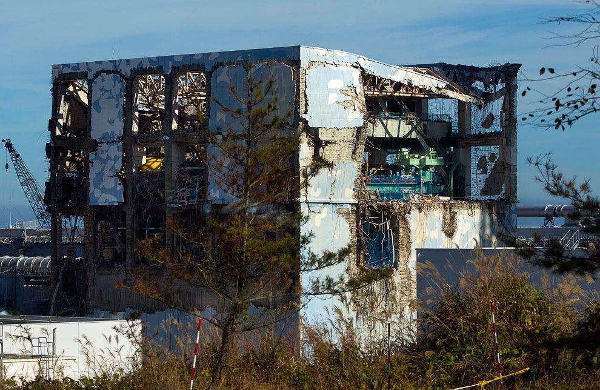
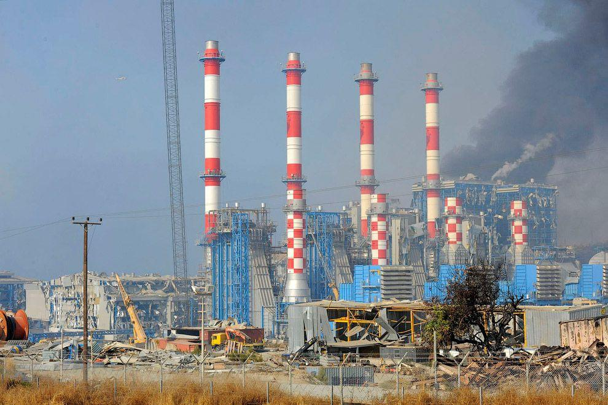
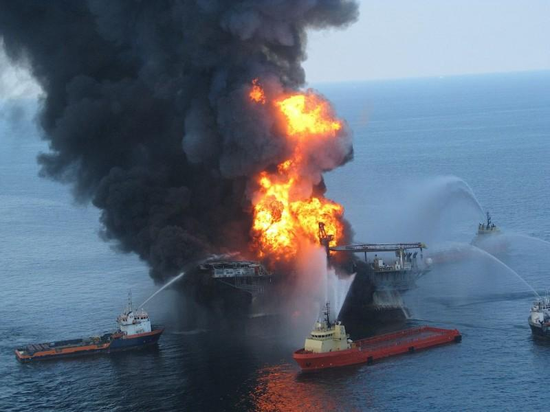

2011 год
 11 марта 2011 года на северо-востоке Японии на АЭС «Фукусима‑1» после сильнейшего землетрясения произошла крупнейшая за последние 25 лет после катастрофы на Чернобыльской АЭС авария. Вслед за подземными толчками магнитудой 9,0 на побережье пришла огромная волна цунами, которая повредила четыре из шести реакторов атомной станции и вывела из строя систему охлаждения, что привело к серии взрывов водорода, расплав Источник статьи журнал Новости в фотографиях, у которого все копируют контент - BigPicture.ru лению активной зоны. Общий объем выбросов йода-131 и цезия-137 после аварии на АЭС «Фукусима‑1» составил 900 000 терабеккерелей, что не превышает и 20% от выбросов после Чернобыльской аварии в 1986 году, которые составили тогда 5,2 млн терабеккерелей. Суммарный ущерб от аварии на АЭС «Фукусима‑1» эксперты оценили в 74 млрд долларов. Полная ликвидация аварии, в том числе демонтаж реакторов, займет около 40 лет.
2011 год
 11 июля 2011 года на военно-морской базе неподалеку от Лимасола на Кипре произошел взрыв, который унес 13 жизней и поставил островное государство на грань экономического кризиса, разрушив крупнейшую электростанцию острова. Следователи обвинили президента республики Димитриса Христоф Если ты читаешь эту надпись, значит кто-то взял эту статью с BigPicture.ru иаса в том, что он халатно отнесся к проблеме складирования боеприпасов, конфискованных в 2009 году с судна «Мончегорск» по подозрению в контрабанде оружия Ирану. По факту боеприпасы хранились прямо на земле на территории военно-морской базы и сдетонировали из-за высокой температуры.
2011 год
 11 марта 2011 года в результате сильнейшего в истории Японии землетрясения и последовавшего за ним цунами произошла крупная радиационная авария максимального, 7‑го уровня по Международной шкале ядерных событий на АЭС «Фукусима‑1». Финансовый ущерб, включая затраты на ликвидацию последствий, затраты на дезактивацию и компенсации, оценивается в 100 миллиардов долларов. Поскольку работы по устранению последствий займут годы, сумма увеличится. Техногенная катастрофа (англ. Industrial disaster) — крупная авария на техногенном объекте, влекущ Источник статьи журнал Новости в фотографиях, у которого все копируют контент - BigPicture.ru ая за собой массовую гибель людей и даже экологическую катастрофу. Одной из особенностей техногенных катастроф является их случайность (этим они отличаются от терактов). Обычно техногенные противопоставляются природным катастрофам. Однако, подобно природным, техногенные катастрофы могут вызвать панику, транспортный коллапс, а также привести к подъему или потере авторитета власти. Ежегодно в мире происходят десятки техногенных катастроф разного масштаба. В этом выпуске вы найдете перечень крупнейших катастроф, произошедших с начала века.